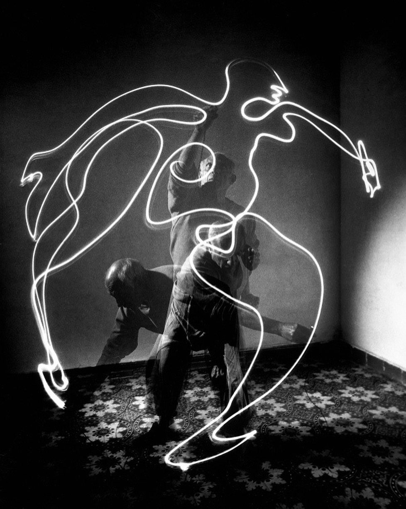

Надо быть честными с собой и признать, что творческая деятельность непростой путь. Такие люди, в силу особенностей характера и структуры психики, как правило находятся или внизу социальных иерархий, или наверху. Но никто не даст вам гарантий, что именно вам удастся попасть наверх. Такова «селяви». Общество не любит белых ворон, фиолетовых коров и оранжевых зебр. Тех, кто выделяется, кто думает всё время не так, кто не хочет жить как все — сечёт меч. Всегда. Однако, есть и хорошая новость: общество готово признавать и отдавать дань творческим личностям… при определенных условиях. Это случается тогда, когда вы готовы проявить «силу» и отстоять свое право на инаковость. То есть тогда, когда вы сильнее общества, хоть в чем-то, а ваша сила способна причинить людям добро.
Личная сила во-многом зависит от устойчивости и цельности мировоззрения. Поэтому — это пункт первый.
Ключевая проблема с мировоззрением заключается в том, что оно обычно «случайно». То есть, как правило мы не занимаемся его формированием осознанно. Наши представления и убеждения основываются на семейных историях, на фрагментах прочитанных опусов в соцсетях, мнениях друзей, полунаучных клише и «стопудовых» (при этом никогда не проверяемых) истинах. В этом смысле, мы как пылесос — открой его и обнаружишь там кучу интересных субстанций, от ниток и монет, до обрывков текстов, новогодней мишуры и вселенской пыли. Только пылесосу всё равно, он будет работать и исправно выполнять свою функцию вне зависимости от состава этого «перегноя». А мы?
Если копнуть глубже, то мы увидим, что кажущаяся при поверхностном взгляде стройной и логичной картина мира, начинает рассыпаться и запутываться. Только тронь любое ключевое понятие, воспринимаемое нами как само собой разумеющееся, как тут же становится ясно, что мы ни черта не знаем. Причём, не знаем не в смысле того, что надо помнить кучу легитимизированных определений, а в смысле того, что на самом деле мы не знаем толком, что именно вкладываем в эти понятия-ценности, на чем они основаны и что нам с этим делать. Иначе говоря, на сознательном уровне наши убеждения оказываются непроявленными, а их несостоятельность в реальной жизни не сразу бросается в глаза, потому что трудно делать выводы из того, что не получается на основе того, чего не знаешь.
По сути, мировоззрение представляет собой ответ на 3 вопроса:
- ЧТО И КАК ЕСТЬ? Наши ключевые представления о реальности, о том каков мир, как мы к нему относимся и как он относится к нам.
- ЧТО И НАСКОЛЬКО Я ЗНАЮ? На чем действительно основаны мои убеждения и каковы реальные приоритеты в моем процессе потребления информации.
- ЧТО И ЗАЧЕМ Я ДЕЛАЮ? Зачем я делаю то, что делаю. Хочу ли я делать это дальше, если нет, то почему? И что нужно делать ещё, чтобы «не было больно за бесцельно прожитые годы»?
Эти вопросы имеет смыслы обдумывать в рамках 12 ключевых понятий, формирующих мировоззрение человека. Конечно, человек гораздо более многообразное сложное явление, чем «что-то там 12», но с чего-то начинать надо — чтобы выйти за рамки надо сначала эти рамки поставить.
Реальность
Личность
Общество
Счастье
Справедливость
Духовность
Успех
Деньги
Развитие
Мудрость
Творчество
Красота
Чтобы запустить работу ума в нужном направлении, я предлагаю несколько ценных источников, книги и видео-лекции:
Джордан Питерсон. 12 правил жизни, книга.
Джордан Питерсон. Цикл Личность, 22 лекции, ютуб.
Андрей Баумейстер. Цикл Метафизика сознания, 14 лекций, ютуб.
Андрей Баумейстер. Мировоззрение и три главных вопроса, ютуб.
Василий Кандинский. О духовном в искусстве, книга.
Андрей Пелипенко. Быдло, статья.
Андрей Курпатов. Сказка о потерянном предназначении, ютуб.
Когда вы освоите все источники и обдумаете их, нужно написать эссе, чтобы оформить и структурировать собственные соображения.
Это суперважно!
Это суперважно, поскольку мышление письменное очень отличается от внутреннего потока размышлений. Оно позволяет найти прорехи в логике, свести воедино разные части «слона» и понять то, что очевидно не хватает в нашей картине мира на данный момент.

